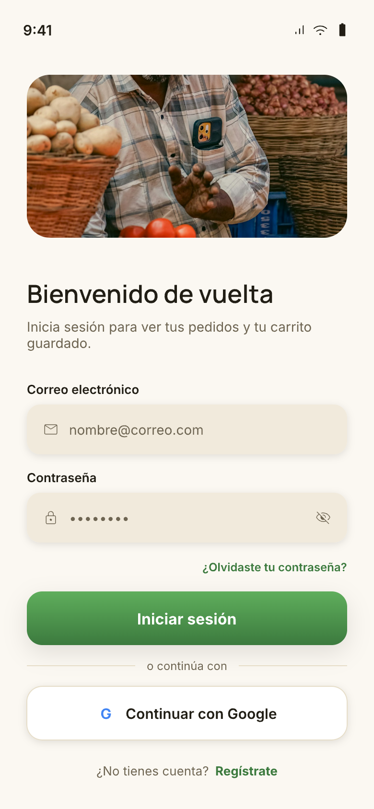
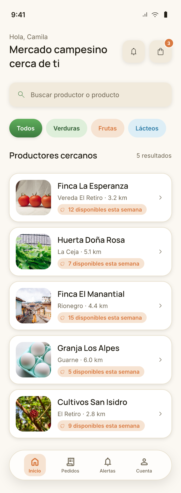
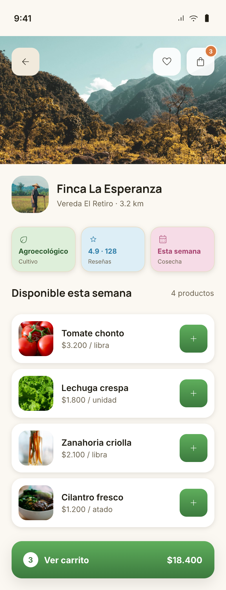
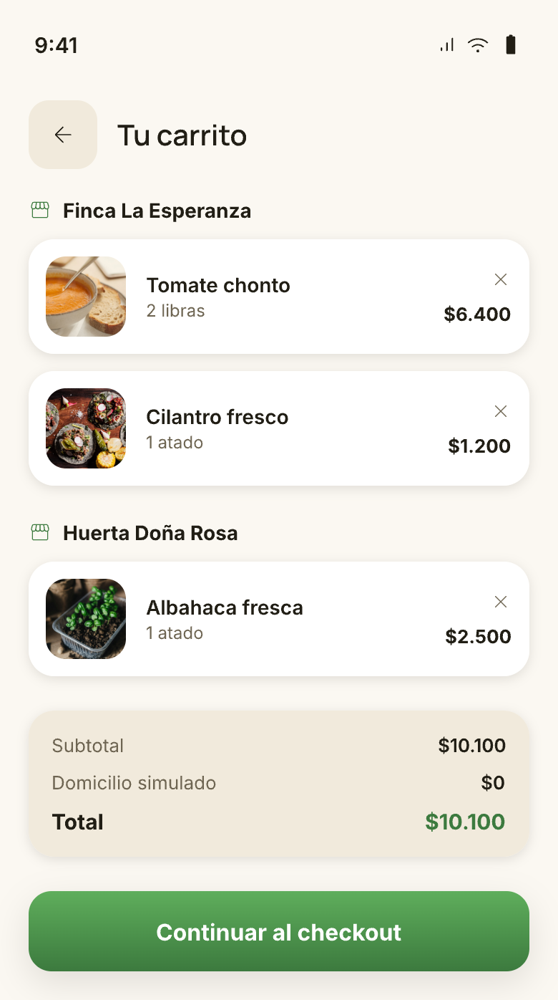
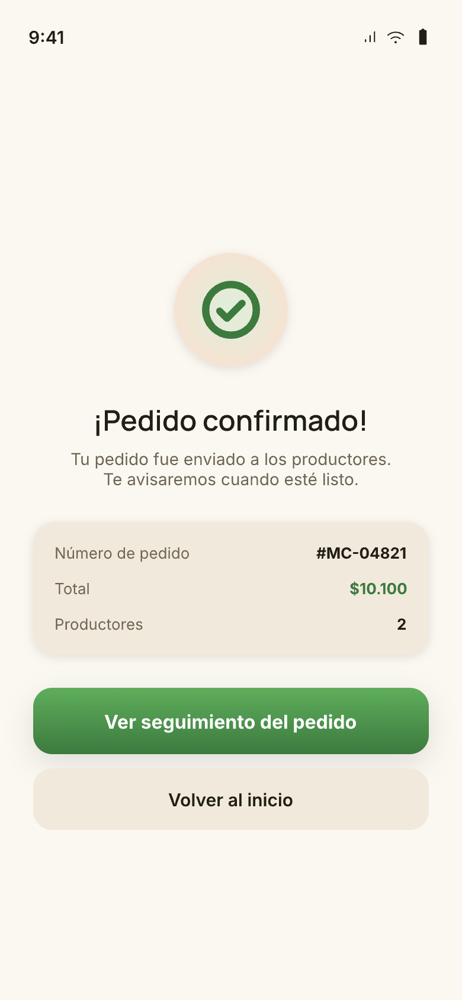
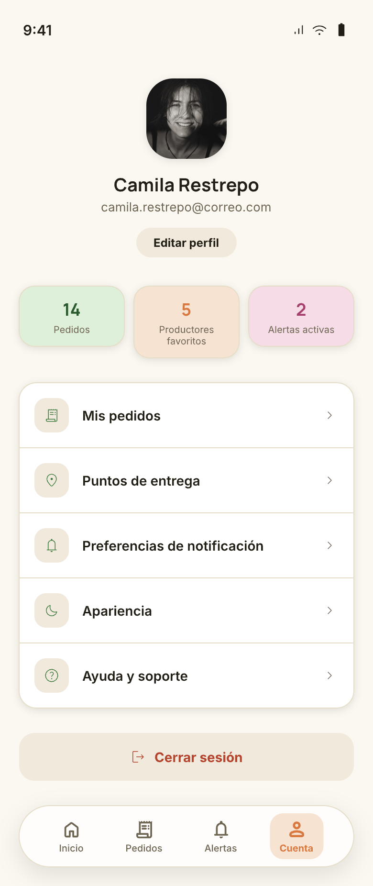

Actividad de navegación entre pantallas
Objetivo
Cada integrante construye una pantalla de la aplicación del comprador y, entre los tres,
diseñan y programan la navegación que las conecta con Navigator.push y
Navigator.pop, pasando datos de una pantalla a otra. Todo el trabajo se hace con Git y
GitHub, como en la Semana 3.
Qué se hace
| Pasos | Qué se hace |
|---|---|
| 1 y 2 | Crear el proyecto, subirlo y clonarlo |
| 3 y 4 | Elegir pantallas y diseñar el flujo |
| 5 y 6 | Construir cada pantalla y fusionar los Pull Requests |
| 7 | Programar la navegación |
| 8 | Revisar y entregar |
| Después | Sustentación individual |
Paso a paso
Un integrante crea el proyecto y lo sube a GitHub
El equipo elige quién. Esa persona crea en GitHub un repositorio público y vacío (sin README) y, en la terminal:
flutter create navegacion_mercado
cd navegacion_mercadoReemplaza el contenido de lib/main.dart por esta base, que después mostrará la
primera pantalla del flujo:
import 'package:flutter/material.dart';
void main() => runApp(const MercadoApp());
class MercadoApp extends StatelessWidget {
const MercadoApp({super.key});
@override
Widget build(BuildContext context) {
return MaterialApp(
title: 'Mercado Campesino',
home: const Scaffold(
body: Center(child: Text('Mercado Campesino')),
),
);
}
}Borra también el archivo test/widget_test.dart: hace referencia a la app de
ejemplo que acabas de reemplazar y marcaría un error. Luego sube el proyecto:
git init
git add .
git commit -m "Proyecto base"
git branch -M main
git remote add origin URL_DEL_REPOSITORIO
git push -u origin mainPor último, en GitHub (Settings, Collaborators) agrega a los otros dos integrantes.
Los otros integrantes aceptan la invitación y clonan
git clone URL_DEL_REPOSITORIO
cd navegacion_mercado
flutter pub get
flutter runTodos deben ver la app base corriendo antes de seguir.
Cada integrante elige una pantalla distinta
Escojan del banco de pantallas (más abajo). Dentro del equipo no se repiten. Todavía no escriban código: primero se diseña el flujo.
Diseñen el flujo antes de programar
Este es el paso que más pesa. Entre los tres deciden cómo se recorre la app y lo dejan por escrito en el repositorio:
- Una representación del flujo entre pantallas. Muestra cómo se pasa de una
pantalla a otra y qué hace el usuario para hacerlo (por ejemplo, "toca el productor"). La forma la
eligen ustedes, y va en el
README.md. - Una tabla en el
README.md, con una fila por cada salto entre pantallas:
| Desde | Hacia | Acción del usuario | Método de Navigator | Datos que viajan | Pila después del salto |
|---|---|---|---|---|---|
| (pantalla A) | (pantalla B) | (qué toca) | (cuál y por qué) | (qué dato y en qué sentido) | (pantallas, de abajo hacia arriba) |
- Una sección "Decisiones". Una línea por cada decisión no obvia, por ejemplo por qué eligieron ese recorrido o por qué un dato viaja de una pantalla a otra.
Suban el diseño en una rama diseno/flujo con su Pull Request, y que lo fusione otro
integrante. El commit del diseño debe ser anterior al código de navegación.
Cada integrante construye su pantalla en una rama propia
Cada pantalla vive en su propio archivo, lib/pantallas/nombre.dart. Ejemplo para el
Carrito:
import 'package:flutter/material.dart';
class PantallaCarrito extends StatelessWidget {
const PantallaCarrito({super.key});
@override
Widget build(BuildContext context) {
return Scaffold(
appBar: AppBar(title: const Text('Carrito')),
body: const Center(child: Text('Carrito')),
);
}
}Si la pantalla necesita estado propio, usen StatefulWidget. Trabajen en su rama con
commits pequeños y frecuentes, uno por cada avance real:
git switch -c pantalla/carrito
# crear el archivo y construir la pantalla
git add .
git commit -m "Agrega pantalla de carrito"
git push -u origin pantalla/carritoDespués abre un Pull Request hacia main desde GitHub.
home en
main.dart por su pantalla. Ese cambio no se incluye en el commit.
Revisen y fusionen los Pull Requests
- Nadie fusiona su propio Pull Request. Lo revisa y lo fusiona otro integrante.
- Si dos integrantes tocaron el mismo archivo y aparece un conflicto, resuélvanlo conservando el trabajo de todos, como en la Semana 3.
- Cuando estén las tres pantallas fusionadas, todos hacen
git switch mainygit pull.
Programen la navegación según el diseño
Cada integrante, en una rama navegacion/su-pantalla, programa las salidas de
su pantalla con Navigator.push y Navigator.pop, siguiendo
la tabla, y abre su Pull Request (mismas reglas del paso 6). El integrante cuya pantalla sea la
primera del flujo la pone como home en main.dart.
La navegación debe cumplir:
- Las tres pantallas se alcanzan desde la primera con
Navigator.push. - Al menos un paso de datos de ida: la pantalla de destino recibe el dato por su constructor y lo muestra.
- Desde cada pantalla, salvo la primera, se vuelve con
Navigator.pop, tanto con un botón de la pantalla como con el botón Atrás del sistema. - Se puede recorrer todo el flujo sin que la app se cierre ni quede en negro.
- El código hace lo que dice la tabla. Si no coincide, se corrige lo que esté mal y se anota.
Revisen y entreguen
Un integrante comparte el enlace del repositorio en el canal de actividades de Teams.
Banco de pantallas
Elijan tres, una por integrante. Las imágenes son el diseño de referencia, no recursos para la app: hay que construir la pantalla con widgets. Cada tarjeta indica lo mínimo que se pide; lo opcional suma pero no se exige.

Inicio de sesión
/login
Mínimo: Título, campo de correo, campo de contraseña y botón Iniciar sesión.
Opcional: Imagen de cabecera, mostrar contraseña, enlace Regístrate, Google.
Datos: Envía el correo a la pantalla siguiente.

Inicio
/inicio
Mínimo: Saludo con el correo recibido y la lista de los 5 productores (nombre, vereda y distancia) con ListView.builder.
Opcional: Buscador, categorías, contador del carrito, barra inferior.
Datos: Recibe el correo. Envía el productor elegido.

Detalle de productor
/productor
Mínimo: Nombre y vereda del productor recibido, y sus 4 productos con precio y un botón + para agregar.
Opcional: Foto de portada, insignias, botón Ver carrito.
Datos: Recibe el productor.

Carrito
/carrito
Mínimo: Productos agregados con cantidad y precio, total, y el botón Continuar al checkout, que aquí lleva a la Confirmación.
Opcional: Agrupar por productor, botón para quitar un producto.
Datos: Recibe los productos.

Confirmación
/confirmacion
Mínimo: Mensaje de pedido confirmado, número de pedido, total, cantidad de productores y botón Volver al inicio.
Opcional: Ícono de éxito. El botón Ver seguimiento queda sin acción.
Datos: Recibe el resumen del pedido.

Cuenta
/cuenta
Mínimo: Nombre, correo del comprador y botón Cerrar sesión.
Opcional: Estadísticas y lista de opciones (sin acción).
Datos: Recibe el correo. El botón Cerrar sesión vuelve a la pantalla anterior.
Cómo se evalúa
De mayor a menor peso:
- Diseño del flujo. La representación del flujo y la tabla existen, son coherentes, indican qué pasa en la pila y justifican las decisiones. Se ve que se pensó antes de programar y, si el diseño cambió, se explica por qué.
- Comprensión (sustentación individual). Cada integrante explica el comportamiento de los saltos, incluidos los que no programó.
- Autenticidad y proceso. Historial de commits progresivo, código propio y ayudas declaradas.
- Navegación funcional. Cumple las condiciones del paso 7 y coincide con el diseño.
- Pantallas. Cada una cumple el mínimo del banco y corre sin errores.
- Trabajo en equipo con Git. Ramas, Pull Requests sin autofusión y commits de los tres.
Sustentación individual
Preguntas típicas:
- ¿Qué hace este
push(o estepop) y por qué está aquí? - ¿Cómo está la pila antes y después del salto? ¿Qué hace el botón Atrás?
- ¿Cómo viaja el dato y dónde se recibe?
- Prueba en vivo: "quita este pop o cambia el destino de este push y, antes de ejecutar, dime qué va a pasar".
Autenticidad del código
- El código lo escribe quien lo entrega. Se puede consultar documentación, la guía de la Semana 5 y a los compañeros para entender, pero no se pegan bloques que no se comprenden.
- Si se usó ayuda externa (documentación, foros, herramientas de IA), se declara en el README, en la sección "Ayudas usadas": qué se consultó y para qué. Declarar una ayuda no resta; ocultarla y no poder explicar el código, sí.
- Se revisa el historial: commits pequeños repartidos en el tiempo, no un solo commit enorme al final.
- La valoración de una parte es individual: si su autor no puede explicarla ni modificarla en vivo, no se cuenta, aunque funcione.